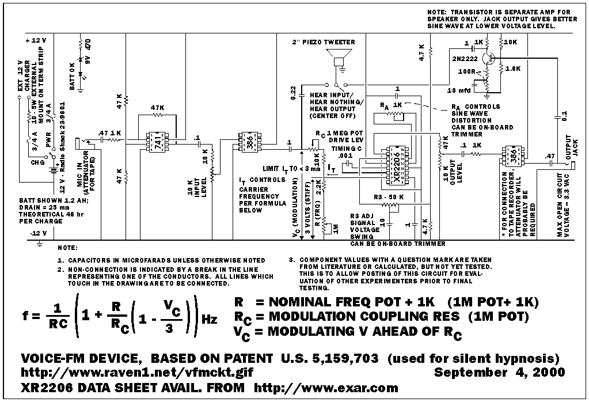
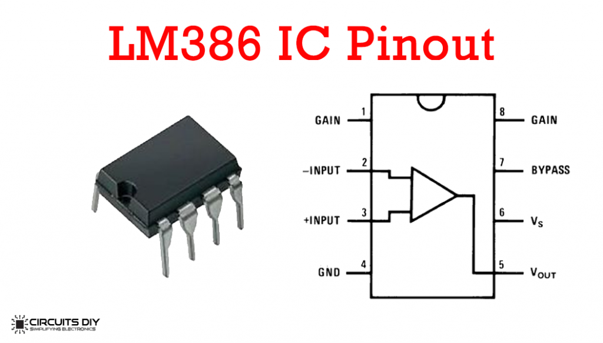
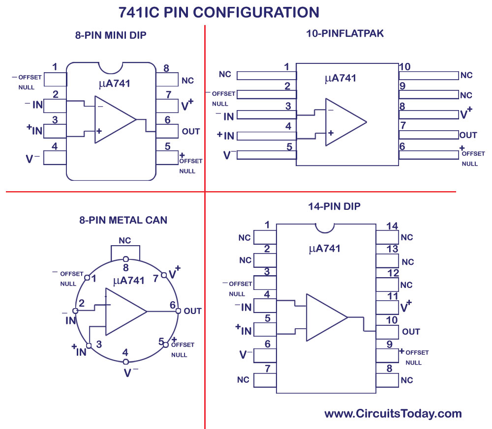
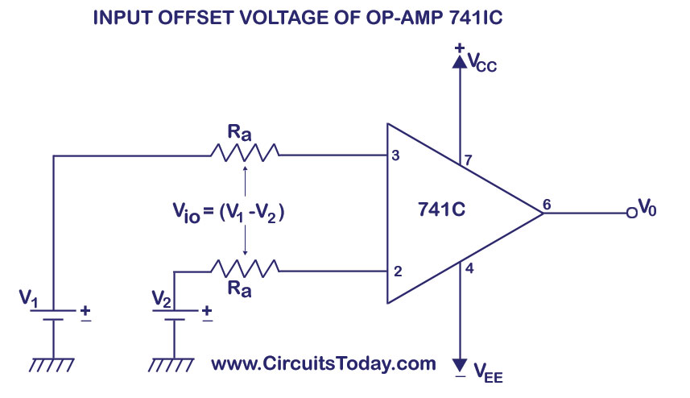
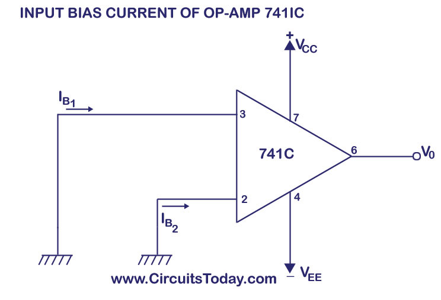
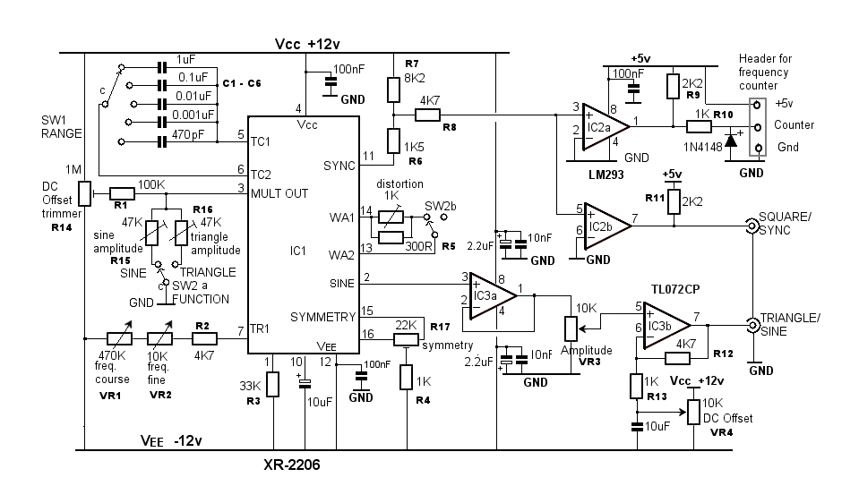
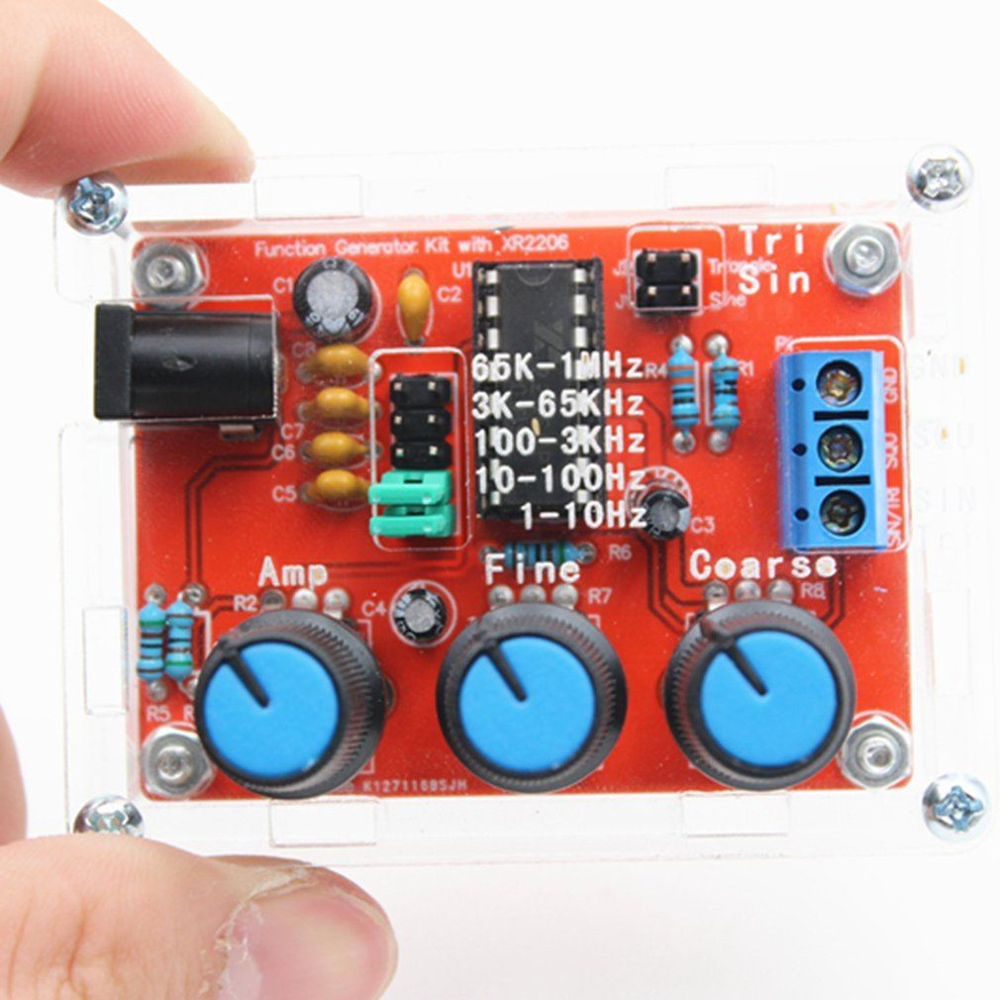

The following is extracted from “the Silent Sound Demo for the mind control machinery”. This come from the time (around 2000) when the patent was first granted and the inventor was trying to sell his device. It is extracted from historical archives and is useful in helping us design our own systems to conduct affirmations prayer campaigns.
This entire article lists the schematics, parts list and construction blueprints of a demo device that shows the principles of the Silent Sound Technology that is now in use by almost all of the United States government agencies, the mainstream media and advertisement companies.
This is for those who want to DIY their own system, or who want to experiment themselves. I am afraid that it is a bit technical, but I am a geek and this kind of stuff excites me so much.
It’s like a pretty girl wearing an awesome dress (with cute earrings, and a really nice set of high heels), some tasty shraz wine, and a super delicious pizza all together for a night of magic.
But that’s just me. I am such a sucker for a girl wearing a dress, high heels and really cute earrings. Not to mention pizza and shraz wine.
For those of you who are not geeks, please just skim the article and realize that it exists. Future articles will build upon the information provided here and make it very easy to hack into your own brain and biological systems so that YOU have control over your body and your MWI.
Great stuff actually. But sorry for the technical opacification.
The Schematic
Here’s a nice overview summary of the circuit schematic. Obviously, it is not an overly complex device; Four IC chips, a handful of capacitors and resistors and a transistor.

Use Chip Sockets
Do not go all in for hard-wiring and soldering everything. Use male and female connectors and attach using this convention. And Lordy, please refrain from wire wrapping.
An IC socket, also known as a chip socket, or a DIP IC socket is an electrical connector used in the field of electronic engineer. The pins of the integrated circuit (IC) connect into the socket making a robust electrical connection without the requirement of soldering. -DIP IC Sockets - Peter Vis
The Drawings
The several Corel Draw 3 .CDR drawings referenced below will NOT display in most browsers. The idea is that you SAVE TO YOUR LOCAL HARD DRIVE each one, then print from a compatible graphics package. This method gives the clearest quality prints.I HAVE ALSO INCLUDED .GIF DRAWINGS, HOWEVER, DUE TO THE COARSE RESOLUTION OF MY GRAPHICS SOFTWARE, THESE MAY OR MAY NOT PRINT TO MEET YOUR NEEDS.An office services shop should be able to print the .CDRs – BE SURE THEY SELECT “FIT TO PAGE”. (Note that this instruction packet is dated from 2001. – MM) Most recent full featured graphics packages can read and print a Corel Draw 3 (VECTOR) drawing. The entire set of .CDR files will fit on one EMPTY 1.44 MB floppy diskette. (Thus dating this article. LOL.) Here are the clickable references, sizes, and paper orientation.
The Documents for the Large Version
- vfmckt3.cdr (RIGHT click) 141K
- vfmckt3.gif (LEFT click to view, RIGHT to download)
- 29K vfmckt3.exe (LEFT click) 26K, when downloaded, you will need to run vfmckt3.exe as a program, and it will unpack itself as vfmckt3.cdr. The zipped version will remain on disk too.
- Schematic diagram, 2N2222 separate amp for spkr, LANDSCAPE orientation kitbotm3.cdr (RIGHT click) 292K
- kitbotm3.gif (LEFT click to view, RIGHT to download)
- 36K Solder side wiring layout, 2N2222 separate spkr amp LANDSCAPE orientation
The Documents for the Small Version
SMALLER PERF BOARD VERSION – NO BOARD CUTTING REQUIRED ** >> DRAWINGS ABOVE ARE SUFFICIENT FOR SOMEONE WHO CAN DESIGN THEIR OWN CASE AND PANEL- vfmtest.gif, shows what the scope trace should look like when proper frequency modulation by voice is applied.
- vfmpanel.cdr (RIGHT click) 54K
- vfmpanel.gif (LEFT click to view, RIGHT to download) 28K
- Panel illustration, LANDSCAPE orientation brd2panl.cdr (RIGHT click) 28K
- brd2panl.cdr (LEFT click to view, RIGHT to download) 13K Shows mechanical details for mounting both the circuit board and 12-volt gel cell into a Radio Shack 270-1809 project box.
- vfm3.cdr (RIGHT click) 22K
- vfm3.gif (LEFT click to view, RIGHT to download) 37K Front PANEL layout if using the **MORE COMPACT** Radio Shack 270-1807 7″ x 7″ x 3″ plastic project case, if wanted
Questions and Answers
Q: Are the items in question expensive? I MIGHT be interested in paying for a demo unit. How large and heavy is it when finished- Radio Shack’s sound level meters are calibrated to match the human ear response.
- Since the demo unit can easily tune the center frequency up above 20 kHz (the meter’s upper limit) you must have a FREQUENCY COUNTER with you or your sound level meter may miss your then-ultrasound signal.
- This demo unit, in order to pump out any kind of signal near the high end of human hearing (around 15 kHz) uses a small PIEZO tweeter, 2 inches dia.
- The readily available, simple, LM386 audio amplifier chip will handle this frequency, but without much power to spare, so the actual amplitude is not great at 14.5 kHz, the Lowery patent specification.
- Therefore, especially OUTDOORS, a demo to use a sound level meter needs an ADDITIONAL STAGE of amplification. That could be added on to the circuit board, but room is a problem with the 276-158 board, or, an amplified speaker, like the Radio Shack 21-541 would be needed for a reliably convincing sound level meter demo. (The 21-541 should also have it’s low-frequency speaker replaced with a 30,000 Hz PIEZO tweeter.)
Demonstration Spiel for Silent Sound Demo Device September 28, 2000
DEMONSTRATION PROCEDURES THOROUGHLY go through the setup procedures first. You need to be completely familiar with the unit before attempting to demonstrate it to the public. Be sure your battery has been charged overnight.
Setup procedures Shortly before the demo, refresh yourself on: – U.S. Govt (NSA) admission mind control exists nsa1.gif – unclassified and commercial mind-weapons-capable devices uncom.htm – MKULTRA and the successful lawsuit against the CIA anat-1.htm
MATERIALS.
You need, when dealing with the public:
- A printout of THIS SET OF INSTRUCTIONS
- A printout of hypno2s.gif (see other below)
- A printout of mkcover.gif (OPTIONAL)
- ! picket sign (if outdoors without a pre-arranged meeting with visitors)
- Some handouts, one sheet of which MUST be nsa1.gif (This has proven very compelling to those who read it)
- For YOUR reference, a printout of Judy Wall’s article on silent sound, including Gulf War use, silsoun2.htm
- ! copy of these instructions and spiel script
- A small flip-nozzle container of water for your voice and perhaps throat lozenges
- Sunscreen and sun hat if outdoors
- A small tape recorder with a voice-ONLY cassette, normal sound
- A patch cord between the “ear” jack on the recorder and the MONO 1/8″ jack on the demo unit (keep volume low or use an attenuator from Radio Shack. Excess volume results in garble.)
Some may find this image explaining silent sound WITHOUT the extra clutter from the voice-to-skull attachment easier to use:
- A printout of voicefm.gif (OPTIONAL) Some may wish to hand out schematics. I recommend this schematic and matching solder-side component placement image:
- vfmckt3.gif, schematic
- kitbotm3.gif, solder-side layout
Components
Here’s some info on the components. And forgive me, but I am fundamentally a geek at heart.
LM386
This is a standard part.



And here's another pinout.

Lot's more in the PDF.
XR2206
This is a well known, if not standard, part.

- Data Sheet
- Data Sheet
- All data sheet version of the XR2206
- The entire product family listing of all the various datasheets
Of course, there are complete modules that you can buy that makes construction of the units so much easier. Such as this one…

ICE-BREAKER.
Mine is a picket sign that carries this message: “GOVT-MEDIA TELL THE PUBLIC ABOUT ELECTRONIC MIND WEAPONS” poster9.gif
SPIEL.
The words below VARY according to the person I’m talking with, and for best effectiveness you will need to judge just how interested the visitor is. I’ve had SHORT visits like:
VISITOR: What is this? (Pointing to the demo unit)
DEMONSTRATOR: This is a device which takes ordinary human speaking voice and does two things to it: – converts it from natural AM (amplitude modulation) to FM (frequency modulation); this garbles the voice – raises the average frequency from around 1,500 Hertz, which is normal, to around 15,000 Hertz.
At 15,000 Hertz, young people with good hearing can hear a slight “ringing in the ears” from this device, while many adults hear nothing at all. But the brain CAN HEAR THE WORDS, even though the ear cannot.
This allows a hypnotist to program an individual over months and years without the target being aware. There is no resistance to the hypnosis because the target doesn’t hear it.
This can be beneficial, but it can also do severe damage to a person’s well being. This is why our group is out here demonstrating. We want government to earn their salaries and perks by placing controls on who can possess such devices and what can be legally done with them.
VISITOR: Thank you (and leaves.) LONG visits start out as above. If questions keep coming, you will need to answer them. Below are some typical questions and answers:
DEMONSTRATOR: (Continuing from the “short” spiel above) ** AT THIS POINT, YOU MAY WANT TO DROP DOWN THIS SCRIPT TO ITEM #6, THE ACTUAL PHYSICAL DEMO OF THE UNIT. I HAVE FOUND THAT A GREAT MANY VISITORS DO NOT WANT TO HEAR THE UNIT. I NEVER PRESS THAT ISSUE WITH THEM, AND ONLY START IT UP WHEN ASKED.
This device as it is here is harmless, unless used on someone who has already been programmed with trigger words or phrases. It becomes very invasive and dangerous, though, if connected to a voice-to-skull projector.
A voice-to-skull projector is a modified radar transmitter in which the human voice controls how close together the radar pulses occur.
In 1974, Dr. Joseph Sharp, of the Walter Reed Army Institute of research, announced his successful transmission of speech directly into the human skull with no receiving device.
By connecting this “silent sound” device to a voice-to-skull transmitter, it is possible to transmit hypnotic phrases silently into a target’s bedroom, every night, for years, without the target’s being aware.
By programming enough “Pavlovian triggers” into an individual, that individual’s personality can be changed substantially. Using pre-programmed trigger phrases, a “handler” of that individual can literally use him or her as a “living robot”, in cases where the individual has high susceptibility to hypnosis.
The process of programming enough triggers into an individual for purposes of control is called “creating a Manchurian Candidate”, after two books of that title. The formal program of the CIA, begun in the 1950s, started out as 149 separate experiments, and was in response to cold war fears and the apparent “brainwashing” of Allied POWs in Korea. This group of “behavior modification” experiments bore the code name MKULTRA.
MKULTRA did include electronic mind control devices, but the best known electronic mind control device of the early days was the Russian LIDA machine. The LIDA, one of which is in possession of Veterans’ Administration researcher Dr. Ross Adey, “entrained” or electronically coerced a target in the path of it’s signal to be relaxed and more susceptible to hypnosis.
A few Korean War vets claimed to have seen the LIDA in use at the POW camps. The MKULTRA code name ceased in the late 1970s when the U.S. Senate’s Frank Church Committee investigated MKULTRA experiments and found that serious atrocities had been committed on people in the military, prisons, or in mental hospitals.
However, not one single perpetrator from the MKULTRA programs was ever brought up on charges. We know that electronic mind control experimentation did not cease, and this “silent sound” technology was used in actual military combat in the 1991 Gulf War.
The United States Army connected a silent sound voice converter like this one to an FM broadcast transmitter, broadcasting on a frequency of 100 Megahertz, and the silent hypnotic commands were carried right on top of normal voice in the Iraqi language.
The normal voice carried confusing information, while the SILENT component re-inforced a sense of despair by hypnotic suggestion. This was documented on Britain’s ITV network, but not shown in the U.S. or Canada.
The successful use by the U.S. Army clearly shows that this technology does work. Through-the-wall voice-to-skull technology makes it almost inescapable.
Our group hopes that eventually the public will learn enough about the invasive privacy destroying electronic mind control weapons available today to demand that government report on these devices to the people, and make their use and possession matters of ongoing PUBLIC record.
Electronic mind control devices have been under development for 50 years, and our group knows only the unclassified and commercial versions. The time for public input and control of all such technologies is LONG overdue.
ACTUAL DEMONSTRATION OF THE UNIT ITSELF.
Put a tape with VOICE (not music) into your demo tape recorder. Connect a patch cable between the “ear” jack on the recorder and the INPUT jack on the demo unit. If you have an attenuator, use it, but if not, remember to keep the volume setting on the recorder quite low.
Excess volume garbles the speech making for an un- convincing demo. Switch on the demo unit. Adjust the tone near the lower end of the frequency knob’s travel.
The Input Level should be around one third of it’s way up from it’s lowest position.
Push PLAY on the recorder. You should hear speech “mixed” in with the demo unit’s tone.
This demonstrates to a visitor what simply converting natural human voice, which is AM or amplitude modulation to FM or frequency modulation sounds like.
Near the low end of the frequency knob’s travel, the frequencies of the voice are still about at their natural values, but the mode is now FM, as opposed to AM.
THE VISITOR CAN HEAR THIS IS GARBLED. Now slowly increase the frequency knob until the audible sound is as HIGH as you and your visitor can just hear. If you are both adults, this point is approximately where the brain can start to convert this inaudible sound BACK TO WORDS.
The process is called “slope tuning”.
You can move the IN-OFF-OUT switch back to IN to show the visitor that voice is actually being fed into the unit. vfmslopd.gif, shows how the brain recovers the inaudible words using the process of “slope detection” or “slope tuning” – worth having a few of these for technical folks who are interested in how it works.
If you have a frequency counter or meter, connect it to the two binding posts, one red, one black, on the front panel.
During a demo adjust frequency somewhere between 14.5 and 14.8 kHz (14,500 Hertz to 14,800 Hertz.) This is the range where both the Lowery patent (5,159,703) and the New Zealand Altered States company operate at to produce brain-understandable silent sound.
SEE ITEM 4 BELOW UNDER SETUP FOR COMMENTS ABOUT USING AN AUDIO LEVEL METER TO ENHANCE YOUR DEMONSTRATION.
SETUP PROCEDURES
vfmtest.gif, shows what the scope trace should look like when proper frequency modulation by voice is applied. vfmslopd.gif, shows how the brain recovers the inaudible words using the process of “slope detection” or “slope tuning” – worth having a few of these for technical folks who are interested in how it works.
1
You will need a small voltmeter to monitor battery charge state. This must be a small meter that reads out VOLTS, and *NOT* a “battery OK” meter with red and green scales.
It is necessary to know voltages for communications by email or phone with people who can offer technical help.
A convenient meter is the Radio Shack 22-802, for around $30, which has a folding case fully containing the two probes and their cable.
The only trick with any meter is TO REMEMBER TO SHUT IT OFF WHEN YOU ARE FINISHED. Almost all of today’s voltmeters have digital displays and have their own small internal battery. (Pick up and carry a spare battery.)
2
First job is to charge the internal 12-volt gel cell. The charger supplied with units purchased from Eleanor White is a simple “wall mount” style 12-volt power supply, with a cable that cannot be connected with the wrong polarity.
Measure the voltage by touching the positive (red lead) screw on the terminal strip with the red probe, and the negative (black lead) screw on the terminal strip with the black probe.
You should get “13 something” volts if the battery is reasonably well charged. If you get zero volts, it is likely that one of the 3/4 amp fuses is blown.
Check both fuses to be sure. (You can check a fuse visually, but 3/4 amp size is hard to see. Instead, switch your meter to K-ohms and put the probes on either end of the glass fuse. The fuse should show zero or very close to zero if it is good.
The fuses are 5 MILLIMETER and you may need to go to Radio Shack to get replacements. !!!!! SWITCH YOUR METER OFF OR BACK TO VOLTS WHEN FINISHED !!!!!
Now remove the probes and connect your charger. Put the probes back on their screws and note the voltage reading.
If charging is in progress, you should see “14 something” volts and perhaps as high as 15 volts. If you don’t, something is wrong – see the paragraph on blown fuses above, or be sure the charger is plugged in, or be sure the outlet has power. If your “wall mount” power supply has a SLIDE SWITCH TO CHANGE VOLTAGE, be sure it is set to “12”.
3
Switch the unit on. You should see the LED on the panel lit up. If not, check the fuses. Switch the IN-OFF-OUT switch to OUT. Turn the frequency control to the lower part of its travel. Be sure the Output Level knob is at least 1/4 of the way up. You should hear a steady tone.
Test that the frequency control can raise the tone high enough that you can no longer hear it, then bring it back down low.
Switch the IN-OFF-OUT switch to IN. Raise the Input Level to full scale.
If you get a squeal, as sometimes happens with PA systems, you need to make a mental note of where that occurs and not go above that point with INPUT level.
4
4. Put a tape with VOICE (not music) into your demo tape recorder. >> COMMENTS ABOUT AUDIO LEVEL METER DEMOS ARE AT THE END OF THIS ITEM.
Connect a patch cable between the “ear” jack on the recorder and the INPUT jack on the demo unit. If you have an attenuator, use it, but if not, remember to keep the volume setting on the recorder quite low. Excess volume garbles the speech making for an un- convincing demo.
Switch on the demo unit. Adjust the tone near the lower end of the frequency knob’s travel. The Input Level should be around one third of it’s way up from it’s lowest position. Push PLAY on the recorder.
You should hear speech “mixed” in with the demo unit’s tone. This demonstrates to a visitor what simply converting natural human voice, which is AM or amplitude modulation to FM or frequency modulation sounds like.
Near the low end of the frequency knob’s travel, the frequencies of the voice are still about at their natural values, but the mode is now FM, as opposed to AM.
The visitor can hear this is garbled.
Now slowly increase the frequency knob until the audible sound is as HIGH as you and your visitor can just barely hear. If you are both adults, this point is approximately where the brain can start to convert this inaudible sound BACK TO WORDS. The process is called “slope tuning”. You can move the IN-OFF-OUT switch back to IN to show the visitor that voice is actually being fed into the unit.
If you have a frequency counter or meter, connect it to the two binding posts, one red, one black, on the front panel. During a demo adjust frequency somewhere between 14.5 and 14.8 kHz (14,500 Hertz to 14,800 Hertz.)
This is the range where both the Lowery patent (5,159,703) and the New Zealand Altered States company operate at to produce brain-understandable silent sound.
If you have an AUDIO LEVEL METER, it can be used to show that sound is coming out at 14.5 kHz even though it is inaudible. !!!!! BUT BEWARE !!!! Some audio meters like Radio Shack’s CUT OFF AT OR NEAR 20 kHz. You need to do considerable testing in private before you attempt audio meter proof in front of visitors.
It is quite easy to get the frequency too high, in which case the audio level meter will show nothing at all. To be practical, you really would need a frequency meter connected to the binding posts to assure yourself you were in the 14.5-14.8 range.
Furthermore, the piezo tweeter is good at high end frequencies, but the common audio chips in the unit are not really strong at these high-end frequencies.
If you plan to use an audio level meter, I’d recommend something like the Radio Shack amplified speaker, catalogue #21-541, requiring it’s own separate 12-volt source (the demo unit’s can be tapped by someone with electronic assembly skills.
This will shorten the charge life of the demo unit’s battery but may be worth doing anyway.) If you do use an external amplifier, be SURE it gets it’s normal voice coil speaker replaced with a PIEZO unit or the high frequency sound won’t get through well enough for the audio level meter to detect.
Conclusion
This is a complete reprint of the archived information regarding Silent Sound. It is very difficult to come across today. The information provided can help the DIY inclined person develop their own system or copy this one to achieve the same results.
Part 3 is next.
There we will discuss the voice-to-skull projector. Stay tuned.
/wp:post-content wp:paragraph . /wp:paragraph wp:paragraph /wp:paragraph wp:list